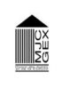

Les DARX Fantastiques
La MJC de GEX
Adresse du site : http://www.mjcgex.fr/
Nom responsable : Anne Sophie DEJACE
Tél : +33 (4) 50 41 75 74
@mail : info##mjcgex.fr
Adresse : 47, rue de Gex la Ville - 01170 GEX
descriptif : La Maison des Jeunes et de la Culture de Gex est une association laïque loi 1901 d’éducation populaire, dirigé par un conseil d'administration d'adhérents bénévoles élus lors de l'Assemblée générale annuelle.
Elle défend des valeurs de citoyenneté et d'accès à la culture pour tous.
Elle est fédérée à la Fédération « les MJC en Rhône-Alpes », à l'Union Départementale des MJC de l'Ain et à la Confédération des MJC de France.
Elle a l'agrément de la Direction Départementale de la Jeunesse et Sports.
Ces employés sont diplômés et ont un statut professionnel.
La MJC reçoit des subventions de la Ville de Gex, de la Communauté de Communes du Pays de Gex, de la Caisse d'Allocations Familiales, de la Direction Départementale de la Jeunesse et Sports et du Conseil Général de l’Ain. Et enfin l'essentiel : il nous héberge !
Le C.R.I
Adresse du site : http://www.cri01.org/
Nom responsable : Sylvain BLANC
Tél : +33 (0)4 50 42 65 00
@mail : cri-info##cri01.org
Adresse : 135, rue de Genève
BP 441
01174 GEX
descriptif : Le CRI, Centre de Ressources Informatiques Pays de Gex, a pour but de développer l’usage et les services liés aux TIC (Technologies de l’Information et de la Communication) sur les territoires des communautés de communes du Pays de Gex et du Bassin Bellegardien. Et le plus important : c'est qu'il nous héberge !
La Ville de GEX
Adresse du site : http://www.ville-gex.fr/
Nom du maire : Gérard PAOLI
Tél : 04 50 42 63 00
@mail : mairie##ville-gex.fr
Elfalapom
Adresse du site : http://www.elfalapom.com/
Nom responsable : François CAMPAGNE
Tél : 00.33.6.30.13.80.70
@mail : president##elfalapom.com
descriptif : L’association est née d’un groupe d’amis adepte des jeux de rôles sur tables tels Lanfeust, petit meurtre et faits divers, Oui ! Seigneur des ténèbres etc.
Ajoutez à cela l’un d’eux, Julien, qui revient et nous parle d’un GN, Conquest of Mythodea, et c’est parti. Le voyage s’organise, les armes sont fabriquées…
Et finalement François émet l’idée de créer une association officielle afin de bénéficier d’aides et de meilleurs moyens. Elfalapom finit par voir le jour.
Cette association, « notre bébé », est destiné à organisé des déplacements à d’autres GN et éventuellement en créer un nous même. De plus nous pensons d’ores et déjà nous investir dans d’autres activités comme le Trollball, les murders etc.
Sur ce site vous trouverez les liens des évènements auquel nous participerons, ou ceux auquel nos amis participeront ou organiseront. Les photos et vidéos, les liens pour s’inscrire et des tas d’autres trucs utiles.
Emotionjura.com
Adresse du site : http://www.emotionjura.com/
Nom responsable : Jean-Michel Hugues Dit-Ciles
Tél : 06.20.95.46.46
@mail : contact##emotionjura.com
Adresse : Agence de presse photographique
11, résidence des fontaines
408 rue de Paris
01170 GEX
descriptif : La philosophie d'Emotionjura.com est le partage des passions du responsable du site pour
montrer comme la Nature est belle. Promouvoir les activités des associations tout en rendant hommage aux bénévoles.
Partager des prévisions météo dans un souci de sécurité et confort de vie de ses lecteurs...
L'association SAMBALOELEK
Adresse du site : http://www.sambaloelek.com
Nom de la présidente : Anne Sophie DEJACE
@mail : sambaloelek.batuk##gmail.com
Adresse des activités : Salle Gaston Laverrière
F-01280 PREVESSIN MOENS
descriptif : Sambaloelek est une école associative de Samba et de percussions.
Dans le cadre de ses activités, elle propose :
- Percussion brésilienne samba Adulte
- Djembe percussion africaine (Enfant-Adulte)
- Danse brésilienne (Enfant-Adulte)
- Des concerts et toutes autres prestations musicales...
- et enfin un festival afro-brésilien, Batuk'En Fête, le 1er we d'octobre à Fort l'Ecluse
Monsieur LEMON
Adresse du site : http://www.monsieur-lemon.com/
Nom responsable : Guillaume LEMON
Tél : !33 (0)6.76.76.74.36
@mail : lemon.guillaume##gmail.com
Adresse : 57 avenue du Jura
01210 FERNEY VOLTAIRE
descriptif : Entre magie et ballons, il saura surprendre son auditoire !!!
ESSBE
Adresse du site : http://www.essbe.eu/
Tel : 06.79.02.58.77
Adresse : M. Sylvain BAUDURET
ESSBE
44 Chemin de La Baronne
01220 DIVONNE LES BAINS
descriptif : Retrouvez l'ensemble de ses réalisations personnelles,
les projets auxquels il a participé, ses bandes dessinées, ou encore son parcours dans le domaine de l'illustration et du graphisme...
EDGE
Adresse du site : http://www.edgeent.com/
@mail : contact##edgeent.com
Adresse : Edge Entertainment
6, rue du Cassé
31240 Saint Jean
descriptif : concepteur et vendeur de jeux de plateaux.